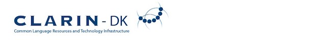

CLARIN-DK is an infrastructure where researchers can deposit, share and download language-based material. i.e. texts, transcriptions, lexicons, word lists, audio and video files. CLARIN-DK also comprises interactive language tools, e.g. tokeniser, PoS tagger and lemmatiser, a data collection of TEI annotated texts (the earlier DK-CLARIN), a corpus tool Korp, and a visualisation tool Voyant for distant reading.
CLARIN-DK is the Danish part of the European research infrastructure for the Humanities CLARIN ERIC.
The Brandes corpus is accessible at CLARIN.DK here.
